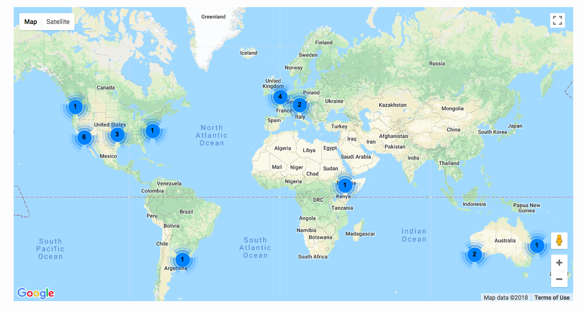

Marzo 2018

Nuestra misión
Enseñamos habilidades básicas para la informática científica para hacer que los investigadores en ciencias, ingeniería y medicina sean más productivos.
El problema
- Los científicos pasan mucho tiempo construyendo y usando software
- La mayoría son principalmente autodidactas
- La evidencia sugiere que no hacen las cosas muy bien
Nuestra solución
- Científicos que enseñan a científicos
- Dos días de aprendizaje práctico
| La Terminal Unix | ⇒ | automatizar tareas |
| Git y GitHub | ⇒ | rastrear y compartir el trabajo |
| Python o R | ⇒ | construir código modular |
Los detalles
- Todos los materiales son de acceso abierto
- Los instructores son voluntarios (hora tenemos 1297 instructores calificados)
- Hasta 2017 hemos organizado 1023 talleres para 26872 personas
Latinoamerica!

Talleres en español en latinoamerica!
Lecciones de español
- Traducido del inglés al español
- Fue un esfuerzo comunitario global
- Listo: Control de versiones con Git La terminal de Unix
- Listo: Control de versiones con Git
- En desarrollo: Investigación reproducible con R
Como participar
- Ven a un taller y aprende
- Organiza un taller
- Conviértete en instructor
- Crea y mejora lecciones
- Ayuda a construir herramientas
Aprende más
/